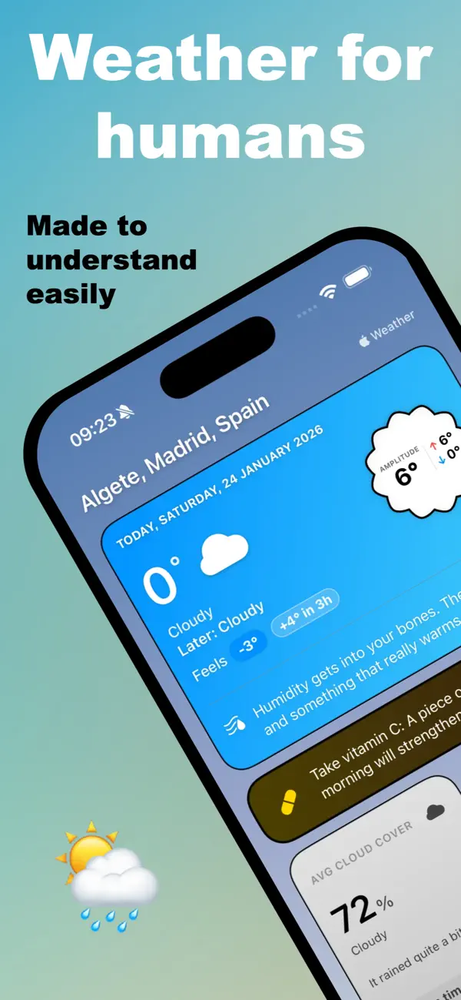
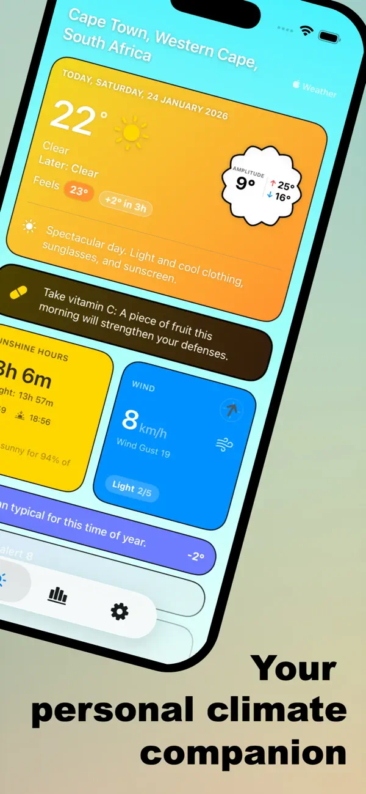
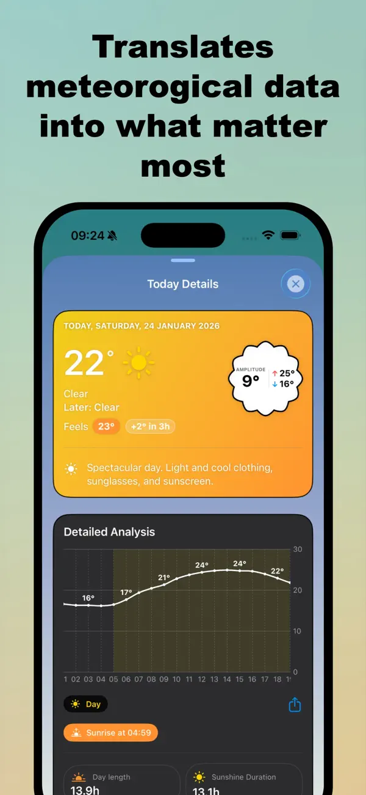

Available Now
Weather for humans
Made to understand weather
Stop guessing what the temperature feels like. Get smart clothing tips, track daylight hours, and compare today's climate with history. Weather, finally humanized.



